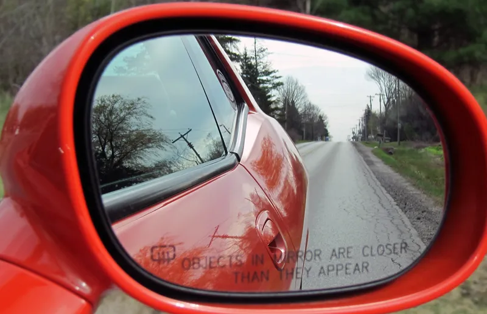

Zašto automobili u retrovizoru izgledaju dalje nego što jesu?
Sigurno si prilikom vožnje primijetio/la da na retrovizoru piše "Objects in mirror are closer than they appear" — "Predmeti u zrcalu bliži su nego što izgledaju." Zašto je taj natpis uopće potreban? Zar zrcala ne pokazuju stvari onakvima kakve one doista jesu?

Slika 1. Natpis na suvozačevom retrovizoru upozorava vozača da su predmeti bliži nego što izgledaju. Izvor: Autodijelovi
Razmisli na trenutak...
Zamisli da se voziš u automobilu i gledaš u retrovizor. Automobil iza tebe izgleda daleko — možda dvadesetak metara. No kada pogledaš kroz stražnje staklo ili se okreneš, shvatiš da je taj automobil zapravo puno bliže. Kako je to moguće? Kako bi odgovorili na ovo pitanje moramo se upoznati sa refleksijom svjetlosti i sfernim zrcalima.